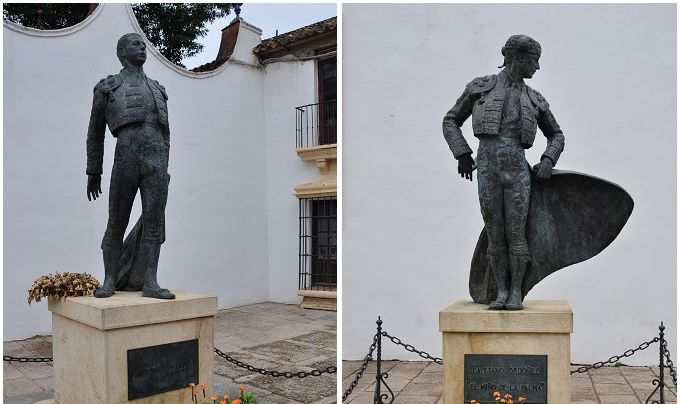
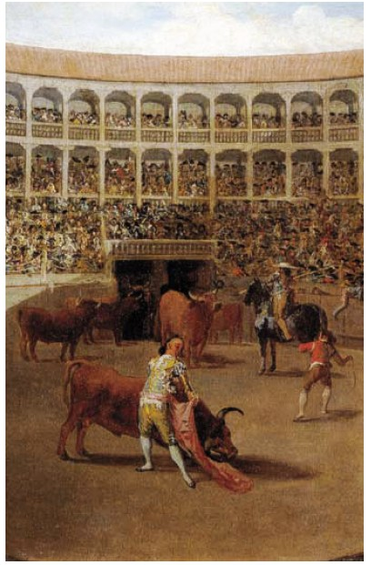
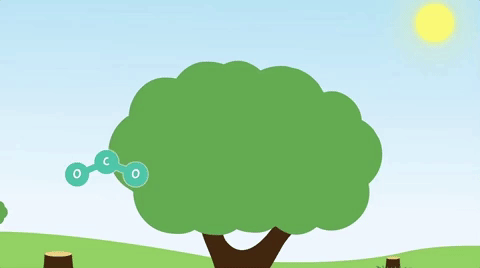

chapter18.2--handout
Background Information
Historical Prototype of the Three Bullfighters 本书斗牛士的历史原型
我们今天的内容中出现了三名斗牛士，他们的名字都是有历史原型的。（I looked through the glasses and saw the three matadors. Romero was in the centre, Belmonte on his left, Marcial on his right. 我从望远镜里看出去，看到那三位斗牛士。罗梅罗居中，左边是贝尔蒙蒂，右边是马西亚尔。）
Belmonte和Marcial都是真实的历史人物。Belmonte（1892-1962）是和Joselito（何塞·利托）齐名的斗牛士，Joselito在我们前面的情节中也出现过：Jake跟Brett提到，在Joselito惨死斗牛场之后，大家就开始玩那一套唬人的把戏（I told her how since the death of Joselito all the bull-fighters had been developing a technique that simulated this appearance of danger...）
Belmonte革新了斗牛风格，为现代斗牛流派的开创人。他曾于1922年一度退出斗牛界，1925年东山再起，技艺大不如前。
Romero的原型则是Cayetano Ordóñez（卡耶塔诺·奥多涅斯），1925年他以78场斗牛和1927年的65场斗牛成为斗牛界的领导者。他的第三个儿子Antonio Ordóñez（安东尼奥·奥多涅斯）和海明威也是好友（比如海明威的作品《午后之死》、《危险的夏天》都有许多灵感是来自于Antonio）. 而Pedro Romero这个名字则来自于18世纪的一位斗牛士，他从1771年到1799年隐退为止，共杀死五千六百头公牛，平均每年达两百头之多。

The Town of Bullfight：Ronda 海明威钟爱的斗牛小镇：龙达
龙达盘踞在仞立陡峭的悬崖（cliff）之上，远远望去，白色的房屋犹如生长在悬崖之上，有人说这座“小城安宁、质朴，仿佛是从周围的山崖之中自然而然生长出来的。”
海明威一生钟爱这个小镇，在《死在午后》（Death in the Afternoon）中，他写道:
With the romantic background and the modern comfort, if a honeymoon or elopement is not a success in Ronda it would be as well to start for Paris and both commence making your own friends.
“如果你想要去西班牙度蜜月或跟人私奔的话，龙达是最合适的地方，整个小镇目之所及都是浪漫的风景……如果在龙达度蜜月或私奔都没有成功的话，那最好去巴黎，分道扬镳、另觅新欢好了。”
海明威一生多次探访龙达小镇，他的多部作品都以龙达为背景。除了《死在午后》， 描写西班牙内战的《丧钟为谁而鸣》（For Whom the Bell Tolls）， 也取材于此。
龙达因斗牛而著名，曾出现过两个斗牛世家，一个是Romero家族，另一个是Ordonez家族。
龙达斗牛场是西班牙最古老的斗牛场之一。斗牛场四周是双层看台，能容纳5000名观众。第一个在此出场的是西班牙斗牛史上的重要人物Pedro Romero。每年九月的第一个周末，在Ronda，都会有著名的戈雅斗牛节（Corridas Goyescas），整个斗牛的过程以及服装，都是按照著名画家戈雅的画作呈现。

Vocabulary
compact
adj. 紧密的；坚实的（packed or put together firmly and closely）
原文：They were bloodstained and compactly folded and packed in the baskets.
沾有血迹的斗篷和红巾叠得板板整整地安放在柳条栏里。
💧compact 可以形容物品“小型的；袖珍的” 比如：a compact camera 袖珍照相机
还可以形容人或者动物“矮小而健壮的” 例如：He had a compact and muscular body.
他个子矮小健壮。
terrain
n. 地带（a particular type of land）
原文：In bull-fighting they speak of the terrain of the bull and the terrain of the bull-fighter.
在斗牛中有所谓公牛地带和斗牛地带之说。
💧terrain 还有“地形、地势”的意思，例如：He knows the terrain of this locality like the back of his hand.
他对这一带的地形了如指掌。
Crush Your Problems

Afterward we went to the café and watched the fiesta come to the boiling-point.
后来我们去了咖啡馆，眼看着狂欢活动达到高潮。
💧表达精讲
come to the boiling-point 是“达到高潮”的意思，boiling-point本身是指“沸点”（the temperature at which a liquid boils）, 这里指“高潮”（climax）;
此外boiling-point还可以引申为“（事情的）爆发点”（flashpoint）, 比如：Relations between the two countries have almost reached boiling point.（两国间的紧张关系已趋白热化。）


I could not see his face clearly under the hat, but it looked badly marked.
我看不清他帽子下面的脸，但是看来伤痕不少。
💧表达精讲
badly marked 形容Romero的脸被Cohn揍得“伤痕累累”；mark有“留下痕迹，弄污”（to damage sth or spoil its appearance）的意思，和mar类似，比如：The disease had marked/marred her face for life.（这场疾病在她脸上留下了终身的疤痕。）

Behind them came all the procession, opening out, all striding in step, all the capes furled, everybody with free arms swinging, and behind rode the picadors, their pics rising like lances.
他们后面跟随者整个队列，进了场向两边展开，全体正步走，每个人都一只手拿着卷起的斗篷，摆动着另一只空手。接着出场的是举着长矛，像带枪骑兵般的长矛手。
💧表达精讲
①procession 可以指“（人或车辆的）行列”（a line of people or vehicles moving slowly as part of a ceremony）;
②open out 直译是“展开”，这里可以联想一支队列展开其实就是分成两支往两边走；
③stride in step 指“踏着步走”；stride就是“迈大步”（to walk quickly with long steps）；step指“（每走的）一步路”，所以stride in step就表示“每一步都迈开了步子走”；
④with free arms swinging “摆动着另一只空手”，free arms指没有拿东西的手，free和occupied相对（occupied表示“已被占用的”，free则是“空闲的”）；
⑤their pics rising like lances “像长矛轻骑兵一样将刺牛的长矛高高举起”；pic指“（刺牛的）长矛”，lances则指“（骑兵用的）长矛”。

The matadors bowed, holding their hats on, before the President's box, and then came over to the barrera below us.
三位斗牛士用手按住帽子，在主席的包厢前鞠躬致意，然后来到我们下面的围栏边。
💧知识拓展
每场斗牛一般都会邀请某个达官贵人作为仪式主持人，坐在最主要的包厢内，也就是这里提到的President's box.

Pedro Romero took off his heavy gold-brocaded cape and handed it over the fence to his sword-handler...The sword-handler took the cape, looked up at Brett, and came over to us and handed up the cape.
佩德罗·罗梅罗脱下他那件沉甸甸的金线织锦斗篷，递给他在栅栏这一边的随从……随从接过斗篷，抬头看看勃莱特，便走到我们跟前，把斗篷递上来。
💧知识拓展
斗牛士在入场式上所披的斗篷，一般在入场后会由随从送给看台上特定的来宾临时保管，比如斗牛士本人爱慕的人或其他来宾。这里的斗篷和斗牛比赛时用来引逗公牛的斗篷不一样。

...and the public, who wanted three times as much from Belmonte, who was sick with a fistula, as Belmonte had ever been able to give, felt defrauded and cheated, and Belmonte's jaw came further out in contempt, and his face turned yellower, and he moved with greater difficulty as his pain increased, and finally the crowd were actively against him, and he was utterly contemptuous and indifferent.
而观众呢，却要求长了瘘管的贝尔蒙蒂做到他过去所能够做到的三倍，现在不免感到上了当，于是贝尔蒙蒂的下巴由于屈辱而撅得更出，脸色变得更黄，由于疼痛加剧，行动更是艰难，最后观众干脆以行来动反对他。他呢，完全采取鄙视和冷淡的态度。
💧表达精讲
①who wanted three times as much from Belmonte...as Belmonte had ever been able to give “要做到求贝尔蒙蒂他过去所能够做到的三倍”；three times as much as 是一个同级比较的结构，意思就是“……的三倍”，如果用比较级结构来改写也就是：twice more than.
②who was sick with a fistula 修饰的是Belmonte; be sick with表示“患上，患有”，fistula指“瘘管”，是一种疾病；
③felt defrauded and cheated “感到上了当”；defraud一般指“诈骗，骗取”（to trick a person or organization in order to get money from them）, 常见搭配是defraud sb of sth, 比如：She defrauded her employers of thousands of pounds.（她从雇主那里骗取了数千英镑。）
④were actively against “用行动来反对”；这里的actively有两种理解，一种是表示“积极地，主动地”（energetically, lively）,另一种表示“行动上地”（through action）,基于下文提到的观众到后来直接往Belmonte扔东西来表示抗议了。

...and finally a volley of cushions and pieces of bread and vegetables, thrown down at him in the plaza where he had had his greatest triumphs.
最后，坐垫、面包片和瓜菜一齐飞向当年他曾在这里取莫大得胜利的场地，落在二的身上。
💧表达精讲
①a volley of 表示“群射的、齐发的……”，一般用于指子弹或石头等，比如a volley of bullets表示“子弹齐发”；volley还可以指“（质问、辱骂、攻击等）连发”，比如：She faced a volley of angry questions from her mother.（她受到母亲一连串愤怒的质问。）
②triumph 作为可数名词表示“巨大成功，重大成就”（a great success, achievement or victory）, 比如：Winning the championship is a great personal triumph.（赢得冠军是伟大的个人成就。）
这里的the plaza where he had had his greatest triumphs就是指Belmonte曾经在这个斗牛赛场上取得无数辉煌的成就。

He had come out of retirement to compete with Marcial, knowing it was a competition gained in advance.
他重返斗牛场的目的是和马西亚尔一比高低，以为这是一场胜利早已在握的比赛。
💧表达精讲
①come out of retirement 可以理解为“重出江湖，东山再起”；
②a competition gained in advance “一场胜利早已在握的比赛”；gain可以理解为“赢得”，gain a competition也就是“赢得比赛的胜利”；in advance指“预先，在事情之前；结合起来“在比赛之前就已经取得胜利”就是“胜利在握”的意思。

He had expected to compete with Marcial and the other stars of the decadence of bull-fighting, / and he knew that the sincerity of his own bull-fighting / would be / so set off by the false aesthetics of the bull-fighters of the decadent period / that he would only have to be in the ring.
他期望同马西亚尔以及其他衰落时期的斗牛明星比一比，他知道只要他在斗牛场上一亮相，衰落时期的斗牛士那套虚张声势的技艺就会在他扎实的斗牛功底面前黯然失色 。
💧表达精讲
①the decadence of bull-fighting “斗牛衰落的时期”（这里指1920年Joselito不幸去世后的时期）；decadence表示“堕落，颓废”（fall in standards）, 一般指道德上的沦丧、贪图享乐等等；
②the sincerity of his own bull-fighting 指Belmonte的斗牛技艺也是“扎扎实实、毫无虚假造作的”；
③...would be so set off by the false aesthetics of...that he would only have to be in the ring 这句话里面包含了一个so...that...的结构，直译是“（他的扎实功底）超越那套虚张声势的技艺如此之多，以致于他只需要在斗牛场上亮相（就可以风光地重出江湖了）”；be set off by可以理解为be set off from, “无从比较地，遥遥领先地”（be distinguished from）; the false aesthetics “虚假的、虚张声势的技艺”，指在Joselito之后的斗牛士们都只做表面功夫。
Content Analysis
今天的内容描写了狂欢节上的最后一场斗牛赛，参加的斗牛士们都是非同小可的大人物（同时都有历史上的原型；这场比赛也基本是以1925年的那场著名斗牛赛为参考）。在比赛开始之前，斗牛用的斗篷和红布都被放在一个柳条篮里，并且上面沾满了之前留下来的血迹，Jake和Brett对此展开了一番讨论，暗示了斗牛比赛的血腥——
💧Clue 1:Bull-fighting is bloody.
Evidence 1:The swordhandlers and bull-ring servants came down the callejon carrying on their shoulders the wicker baskets of fighting capes and muletas. They were bloodstained and compactly folded and packed in the baskets.
随从和斗牛场的工役走下通道，肩上扛着装有斗牛用的斗篷和红巾的柳条篮。沾有血迹的斗篷和红巾叠得板板整整地放在柳条篮里。
Evidence 2:"I wonder if they ever launder them."
"I don't think so. It might spoil the color."
"The blood must stiffen them," Bill said.
"Funny," Brett said. "How one doesn't mind the blood."
“不知道这些东西到底有没有洗过。”
“我看是从来不洗的。一洗可能要掉色。”
“血迹会使法兰绒发硬。”比尔说。
“真奇怪，”勃莱特说。“人们竟然对血迹一点都不在意。”
对于斗牛比赛的残忍和血腥在前面的内容已有铺垫，比如有观众在斗牛赛场外被公牛攻击挑死，之后这头公牛被Romero在赛场上刺死，割下来的牛耳还作为荣耀的象征送给了Brett.
今天出场的人物当中，作者花了相当的笔墨描写Belmonte. 这个人物曾经风光无限，但是后来因为疾病而隐退，现在又要重出江湖。但没想到Romero作为新起之秀完全抢了他的风头——
💧Clue 2:Romero is a great rival of Belmonte.
Evidence 1: Because they were against Belmonte the public were for Romero. From the moment he left the barrera and went toward the bull they applauded him. Belmonte watched Romero, too, watched him always without seeming to.
观众因为反对贝尔蒙蒂，所以就向着罗梅罗。罗梅罗一离开看台前的栅栏向牛走去，观众就向他鼓起掌来。贝尔蒙蒂也在看他，装作不看，其实一直在看。
Evidence 2:His return from retirement had been spoiled by Romero. Romero did always, smoothly, calmly, and beautifully, what he, Belmonte, could only bring himself to do now sometimes.
他这次隐退后重返斗牛场被罗梅罗破坏了。罗梅罗总是那么自如、稳健、优美。他，贝尔蒙蒂，如今只偶尔才能使自己做到这一点。
这个细节也从侧面反映了Romero的确是一位天才型的斗牛士，并且由于年轻更加前途无量，观众们也对他喜爱非常。这里呼应了Jake先前对Romero的评价：This was a real one. There had not been a real one for a long time. 以致于Belmonte这样的辉煌人物在他面前都要黯然失色。
Today's Bonus
💧English prefix for Numbers 英语中的数字前缀
semi-［拉丁］/ hemi-［希腊］
这两个前缀都是表示“半，部分”的意思：
semi-
semicircle 半圆 semimetal 半径
例句：They sit cross-legged in a semicircle and share stories.
他们盘着腿围成半圆坐在一起讲故事。
hemi-
hemisphere 半球 hemiplegia 半身不遂
比如：the depletion of the ozone layer in the northern hemisphere
北半球臭氧层的消耗
sol- / uni-［拉丁］/ mono-［希腊］
表示“一，单独的”：
sol-
solo 独奏曲
例句：The original version featured a guitar solo.
原版以吉他独奏为特色。
uni-
uni (one)-corn (horn角) 独角兽（an imaginary animal that looks like a white horse and has a horn growing from its forehead）
mono-
monopoly 垄断 monologue 独白
例句：Russian moves to end a state monopoly on land ownership.
俄罗斯人提议结束国家对土地所有权的垄断。

bi-［拉丁］/ di- ［希腊］
表示“两，双，两倍”（ two/ both/ double/ twice）
bi-
bilingual 双语的 biweekly 双周刊/两周
例句：He is bilingual in an Asian language and English.
他是通晓一种亚洲语言和英语的双语使用者。
di-
dioxide 二氧化物
di (double)-phthong (sound) 双元音
例句：How much carbon dioxide you save, if any, depends on how far you live from work and how youget there, among other things.
如果真有的话，你可以节约多少二氧化碳？它取决于你住得有多远还是你如何完成目标抑或其他因素。

ter- ［拉丁］ / tri-［拉丁/希腊］
表示“三，第三”（three/ thrice）
ter-
tervalent 三价的 tertiary 第三的
例句：He must have come to know those philosophers through secondary or tertiary sources.
他一定是通过第二手或第三手资料了解那些哲学家的。
tri-
trilogy 三部曲 triple 三倍的、三部的
例句：The blockbuster is the third installment in the film trilogy.
这部重磅电影是该三部曲电影中的第三部。
quadri-［拉丁］/ tetra-［希腊］
表示“四次，四重”（four）
quadri-
quadricycle 四轮车 quadrilingual 用四种语言
例句：He drove his quadricycle, with more noise than speed, through the empty streets.
他开着他那辆速度有限、噪音很大的四轮车，穿行在空荡荡的街道上。
tetra-
tetralogy 四部曲 tetra(four)-gon(angle) 四角形、方形建筑
例句：Give me an old-fashioned tetragon on a central pivot every time.
每次都给我看一个建在中轴上的四角大楼吧。
quin-［拉丁］/ penta-［希腊］
表示“第五/五次/五的倍数”（five）
quin-
quinary 五进制/五倍的 quinate 具有五小叶的
penta-
pentarchy 五头政治 、五国联盟
pentagon 五角形；五角大楼，代指美国国防部
例句：The space shuttle undertook a top secret mission with a military payload under Pentagon control.
航天飞机执行一项绝密使命，使军用酬载由五角大楼控制。